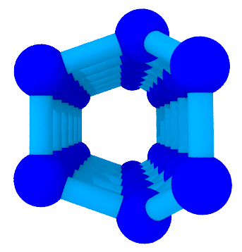
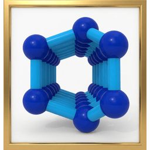
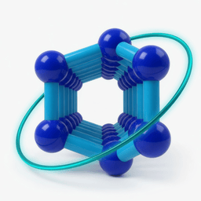
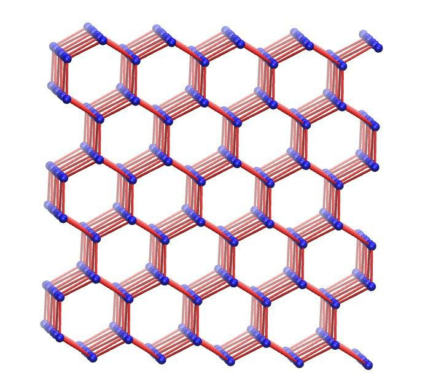
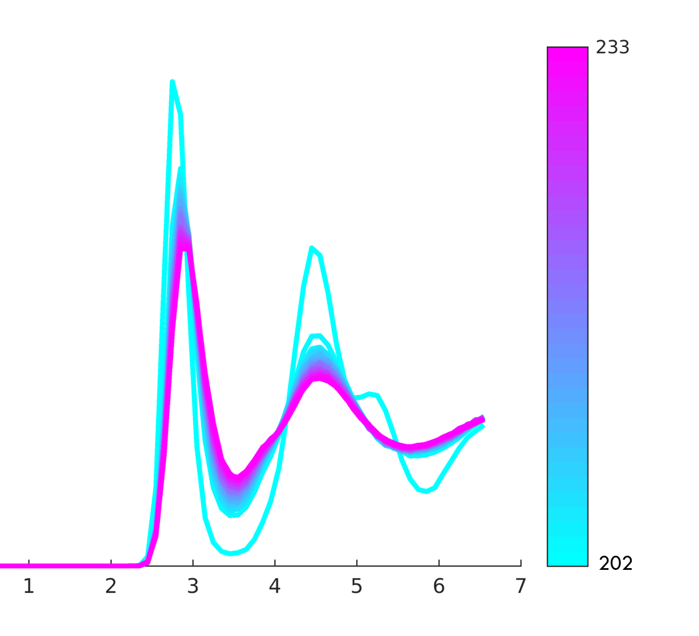
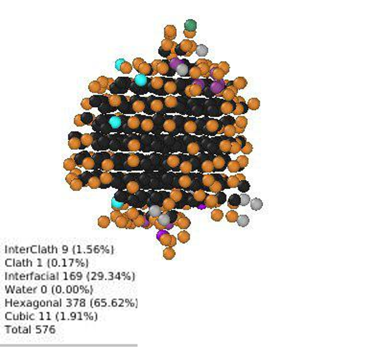
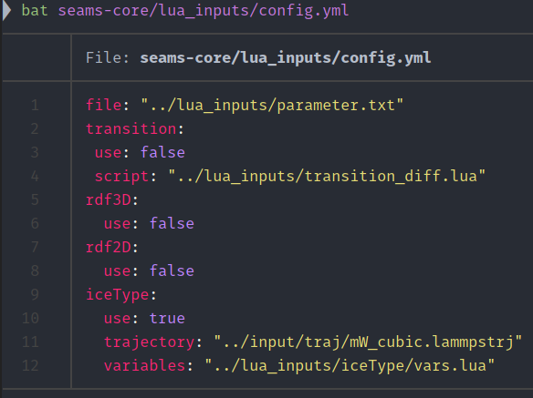
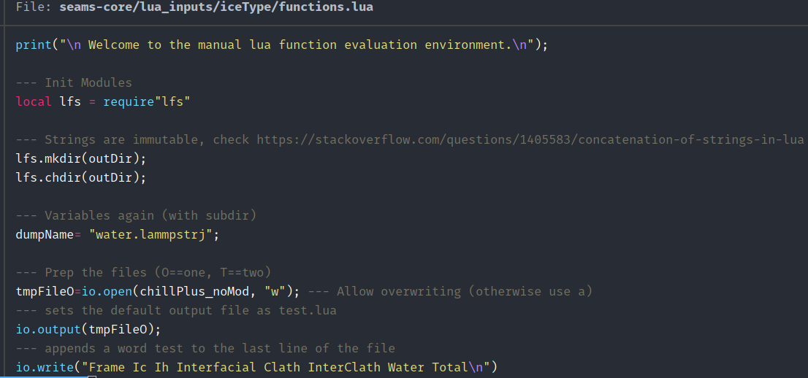

1.x / 2020
One yodaStruct executable. YAML plus Lua. JCIM paper.

Deferred Structural Elucidation Analysis for Molecular Simulations
Version 2.14.0 is the seams-core engine and the seams CLI. Python, Lua, R, Julia, Rust, Fortran, PLUMED, and linkcell live in their own repositories.
2.x
Users install the public names below. Install and API detail live on docs.dseams.info and the binding books.
One yodaStruct executable. YAML plus Lua. JCIM paper.
seams CLI from seams-core v2.14.0. pydseamslib 2.11.1 on PyPI, with an MDAnalysis analysis, an OVITO modifier and a Colab notebook. yodaStruct for Lua and Fennel. dseams-r, Dseams.jl, dseams-rs and dseams-fortran over the C ABI. dseams-plumed for DSEAMS_CAGES. linkcell for periodic kNN.
| Stage | N | median (ms) | IQR (ms) |
|---|---|---|---|
| neighbour list | 32000 | 11.668 | 0.473 |
| ring index | 32000 | 5.715 | 0.788 |
| CHILL+ | 32000 | 7.089 | 0.104 |
| six-rings | 4096 | 4.334 | 0.183 |
| findHC | 4096 | 3.632 | 0.025 |
v2.14.0. The seams CLI on the C++ engine: cages, CHILL+, topology keys, ions, guests, and per-atom dumps for OVITO or VMD. Language bindings are released separately from the engine.

pip install pydseamslib; import pydseams. Latest on PyPI is 2.11.1, for Python 3.11 or newer. Frame API, features for deeptime and PyEMMA, ion and guest helpers, pydseams.adapters for MDAnalysis and OVITO.

Lua and Fennel. require("dseams"). Latest tag is v2.10.0. Build it from source; it is not on LuaRocks yet.
dseams-r, Dseams.jl, dseams-rs and dseams-fortran call the engine through its C ABI. dseams-rs is on crates.io as the dseams crate at 2.14.0. dseams-r installs from GitHub and is not on CRAN yet. Dseams.jl is not in the Julia General registry yet.
v0.4.0. The DSEAMS_CAGES PLUMED action: cage counts, ion classes, key libraries and filled cages on the fly.
Periodic linked-cell k-nearest neighbours for Rust, C, C++, and Python.
CON and convel reader and writer for atomistic checkpoints, maintained under lode-org.
The project repositories under github.com/d-SEAMS are seams-core, PydSEAMSlib, yodaStruct, dseams-r, Dseams.jl, dseams-rs, dseams-fortran, linkcell, dseams-plumed, dseams2_repro, wiki and landing. The CON reader the engine embeds, readcon-core, lives with its LODE siblings under lode-org.
seams CLI
DSEAMS_CAGES
Install the Python wheel with pip install pydseamslib; the import remains pydseams. The latest wheel on PyPI is 2.11.1, built for Linux and Apple-silicon macOS on Python 3.11 or newer. Build the seams CLI and the C libraries from source with meson, pixi or Nix. libseams is not on conda-forge yet. The seams CLI commands are read, chill, chill-plus, ovito-chill+, cages, symmetry, rings, prisms, cluster, fingerprint, ions, f4, steinhardt, rdf, cn, hbonds, pairs, density-z, and domains.
seams read water.lammpstrj
seams chill-plus water.lammpstrj --cutoff 3.5
seams cages water.lammpstrjimport pydseams as ds
frame = ds.read("water.lammpstrj")
print(frame.chill_plus())
print(frame.cages())local dseams = require("dseams")
local cloud = dseams.read("water.lammpstrj")
print(dseams.chill_plus(cloud, {cutoff = 3.5}))Four-neighbour star. Labels cubic, hexagonal, interfacial, clathrate, and water. It does not assign cage membership.
Hexagonal cages (HC) are ice Ih. Double-diamond cages (DDC) are ice Ic. Everything else is water on that score.






The published nix install of the single yodaStruct binary.
The 2.x recording was made with seams 2.7.0. It runs seams cages, notes pip install pydseamslib as a comment before import pydseams, and loads require("dseams"). The package books document each complete API.
1.x recording
2.x recording
Goswami, R.; Goswami, A.; Singh, J. K. d-SEAMS: Deferred Structural Elucidation Analysis for Molecular Simulations. J. Chem. Inf. Model. 2020. 10.1021/acs.jcim.0c00031 / arXiv:1909.09830
Software 2.x authors are listed in each package's CITATION.cff. The reproducibility package is dseams2_repro.